12 B-tree
Introduction
- Assumption. So far, search trees were limited to main memory structures \to the dataset organized in a search tree fits in main memory (internal memory)
- Problem. Transaction data of a bank > 1 TB per day \to use secondary storage media (HDD, SSD, etc.) (external memory)
- Goal. Make a search tree structure secondary-storage-enabled

File system model
- Page. Contiguous block of data (e.g., a file or 4,096-byte chunk).
- Probe. First access to a page (e.g., from disk to memory).
- Property. Time required for a probe is much larger than time to access data within a page.
- Cost. Number of probes.
- Goal. Access data using minimum number of probes.
B-tree
A B-tree of order M (M \geq 3) invented by Rudolf Bayer and Edward M. McCreight is an M-ary tree with the following properties:
- The root is either a leaf or has between 2 and M children.
- All nonleaf nodes (except the root) have between \left\lfloor \frac{M+1}{2}\right\rfloor and M children.
- minimum degree m = \left\lfloor \frac{M+1}{2}\right\rfloor
- maximum degree M
- All leaves are at the same depth h.
- All nodes store keys to guide the searching.
2-3 tree
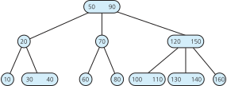2-3-4 tree
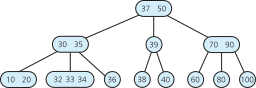
The height of a B-tree
If n\geq1, then for any n-key B-tree T of height h and minimum degree m, h\leq\log_{m}\frac{n+1}{2}
- In practice. Number of probes is at most 4.
- Optimization. Always keep root page in memory.
Structure of Node
Every node x has the following fields:
- x.n, the number of keys currently stored in node x,
- the x.n keys themselves, x.key_{1},x.key_{2},...,x.key_{x.n} stored in nondecreasing order, so that x.key_{1}\leq x.key_{2}\leq...\leq x.key_{x.n}
- x.leaf, a boolean value that is true if x is a leaf and false if x is an internal node.
Each internal node x also contains x.n+1 pointers x.c_{1},x.c_{2},...,x.c_{x.n+1} to its children
The keys x.key_{i} separate the ranges of keys stored in each subtree: if k_{i} is any key stored in the subtree with root x.c_{i}, then k_{1}\leq x.key_{1}\leq k_{2}\leq x.key_{2}\leq...\leq x.key_{x.n}\leq k_{x.n+1}
12.1 Basic operations on B-trees
Introduction
We adopt two conventions:
- The root of the B-tree is always in main memory, so that a Disk-read on the root is never required; a Disk-Write of the root is required, however, whenever the root node is changed.
- Any nodes that are passed as parameters must already have had a Disk-Read operation performed on them.
There are two kinds of algorithms:
- “Single pass down” algorithms that proceed downward from the root of the tree, without having to back up (pre-processing)
- “Two-pass” algorithms (post-processing)
Searching
function B-Tree-Search(x, k)
if x.leaf return null
i ← 1
while i ≤ x.n and k > x.key_{i}
i ← i + 1
if i ≤ x.n and k = x.key_{i}
return (x, i)
else
Disk-Read(x.c_{i})
return B-Tree-Search(x.c_{i}, k)- Challenge: Can we make any improvement?
Creating an empty B-tree
function B-Tree-Create(T)
x ← Allocate-Node()
x.leaf ← true
x.n ← 0
Disk-Write(x)
T.root ← xSingle-pass Insertion
Splitting a node in a B-tree
function B-Tree-Split-Child(x, i)
z ← Allocate-Node()
y ← x.c_{i}
z.leaf ← y.leaf
z.n ← m-1
for j ← [1,...,m-1]
z.key_{j} ← y.key_{j+m}
if not y.leaf
for j ← [1,...,m]
z.c_{j} ← y.c_{j+m}
y.n ← m-1
for j ← [x.n+1,...,i+1]
x.c_{j+1} ← x.c_{j}
x.c_{i+1} ← z
for j ← [x.n,...,i]
x.key_{j+1} ← x.key_{j}
x.key_{i} ← y.key_{m}
x.n ← x.n+1
Disk-Write(y)
Disk-Write(z)
Disk-Write(x)- B-tree(m=4,M=8): split
Inserting a key into a B-tree
function B-Tree-Insert(T, k)
r ← T.root
if r.n = 2m-1
s ← Allocate-Node()
T.root ← s
s.leaf ← false
s.n ← 0
s.c_{1} ← r
B-Tree-Split-Child(s, 1)
B-Tree-Insert-Nonfull(s, k)
else
B-Tree-Insert-Nonfull(r, k)- B-tree(m=4,M=8): split at root
Inserting a key into a B-tree
function B-Tree-Insert-Nonfull(x, k)
i ← x.n
if x.leaf
while i ≥ 1 and k < x.key_{i}
x.key_{i+1} ← x.key_{i}
i ← i - 1
x.key_{i+1} ← k
x.n ← x.n + 1
Disk-Write(x)
else
while i ≥ 1 and k < x.key_{i}
i ← i - 1
i ← i + 1
Disk-Read(x.c_{i})
if x.c_{i}.n = 2m - 1
B-Tree-Split-Child(x, i)
if k > x.key_{i}
i ← i + 1
B-Tree-Insert-Nonfull(x.c_{i}, k)Example of Insertion
Consider B-tree(m=3,M=6)
Initial tree
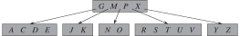B inserted
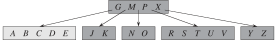Q inserted
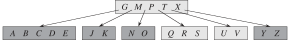L inserted
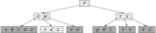F inserted
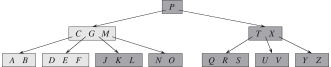
Insertion
Bottom-up Insertion
- All insertions start at a leaf node.
- If the node contains more than the maximum allowed number of keys, then the node is overflow:
- A single median key is chosen from among the node’s keys
- Keys less than the median are put in the new left node and keys greater than the median are put in the new right node.
- The median is inserted in the node’s parent, which may cause it to be split, and so on. If the node has no parent (i.e., the node was the root), create a new root above this node.
B-tree(m=4,M=7)
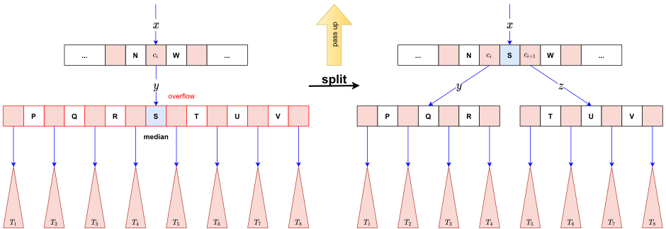
Example of Insertion
Consider B-tree(m=2,M=3)
Initial tree
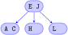I inserted
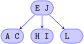D inserted
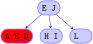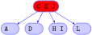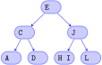
Deletion
Deletion from a leaf node
- Delete it from the node.
- If underflow happens, rebalance the tree.
Deletion from an internal node: Each key in an internal node acts as a separation value for two subtrees
- Choose a new separator (either the largest key in the left subtree or the smallest key in the right subtree), remove it from it is in, and replace the key to be deleted with the new separator.
Rebalancing after deletion
- If the deficient node’s right sibling exists and has more than the minimum number of elements, then rotate left
- Otherwise, if the deficient node’s left sibling exists and has more than the minimum number of elements, then
- Otherwise, if both immediate siblings have only the minimum number of elements, then merge with a sibling sandwiching their separator taken off from their parent.
Right rotation
B-tree(m=4,M=7)
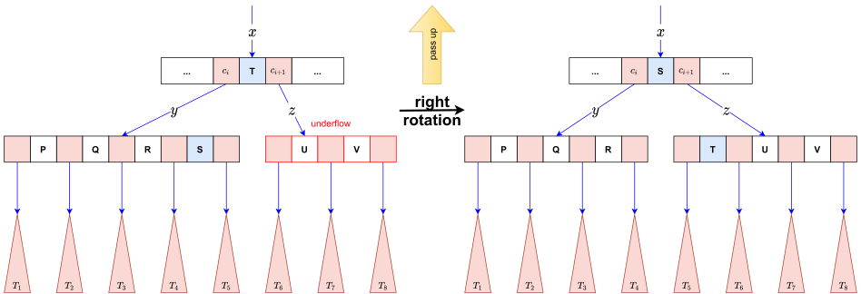
Merge
B-tree(m=4,M=7)
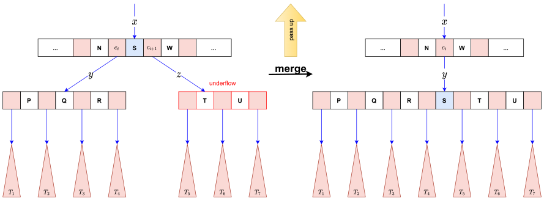
Example of Deletion
Consider B-tree(m=2,M=3)
Initial tree
24 deleted
 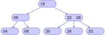
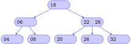18 deleted
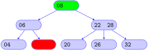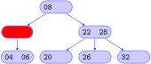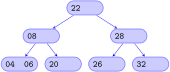
12.2 Applications
Indexing
Indexing is a data structure technique to efficiently retrieve records from the database files based on some attributes on which the indexing has been done.
Indexing can be
- Primary Index: primary key
- Secondary Index: candidate key
- Clustering Index: non-key
Dense Index
- In dense index, there is an index record for every search key value in the database. This makes searching faster but requires more space to store index records itself. Index records contain search key value and a pointer to the actual record on the disk.
Sparse Index
- In sparse index, index records are not created for every search key.
Multilevel Index
- Multi-level Index helps in breaking down the index into several smaller indices in order to make the top level so small that it can be saved in a single disk block, which can easily be accommodated anywhere in the main memory.
B-tree variants
B-tree variants
B+ tree is a B-tree:
- Copies of the keys are stored in the internal nodes.
- The keys and records are stored in leaves.
- In addition, a leaf node may include a pointer to the next leaf node to speed sequential access.
B* tree is a B-tree that ensures non-root nodes are at least 2/3 full instead of 1/2.
Searching a B+ Tree
Table people
| ID | name | age |
|---|---|---|
| 1 | Peter | 20 |
| 2 | Mary | 30 |
| 3 | John | 25 |
| … | … | … |
Queries
SELECT name
FROM people
WHERE age = 25Exact key values:
- Start at the root
- Proceed down, to the leaf
SELECT name
FROM people
WHERE 20 <= age AND age <= 30 Range queries:
- As above
- Then sequential traversal
Applications
B-trees (and variants) are widely used for file systems and databases.
- Windows: NTFS.
- Mac: HFS, HFS+.
- Linux: ReiserFS, XFS, Ext3FS, JFS.
- Databases: ORACLE, DB2, INGRES, SQL, PostgreSQL.
12.3 Workshop
Quiz
- What is a B-tree?
- What is Indexing?